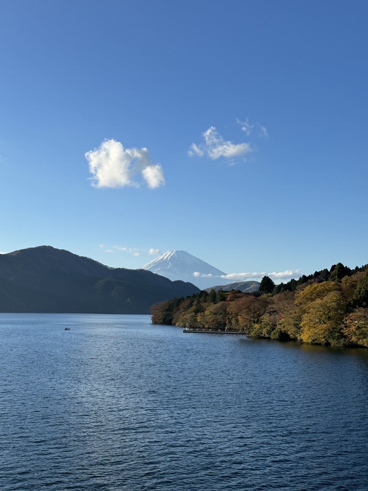

where i've been
and what I took from it
It's not really about sightseeing. The sites are cool, but that's not the part that stays with you. What actually matters is seeing how people live, what their day looks like, what they take for granted that would completely change how you move through the world if you'd grown up with it.
I grew up in Texas, which means I grew up driving everywhere. At sixteen, learning to drive wasn't some milestone you earned — it was just what teenagers did. My family is in Houston. There's space out there. Homes are big, land is cheap. I grew up in a house in the suburbs where a 15-minute drive was considered right around the corner. People would say "it's right up the street" and mean something that required getting in a car, and nobody thought that was strange. The beach was Galveston — and if you know Galveston, you know.
Then I went to Japan. I walked everywhere, took trains everywhere. There were hills, mountains, lakes, things I just didn't grow up around.


But the deeper thing wasn't the scenery. It was that the people there are used to all of it. The trains, the density, the walkability — that's just Tuesday for them. On my second trip I asked my tour guide where her favorite place she'd ever traveled was. She said somewhere in the US, Yellowstone or maybe Colorado, said it was the most beautiful nature she'd ever seen. I just sat with that for a second. Because the whole time I'm in Japan I'm thinking: why would anyone ever want to leave. And she's thinking the same thing about where I'm from.
It's not surprising when you really think about it, but you don't realize it until you're sitting across from someone who proves it. Everyone treats their own country like the default and everywhere else like the interesting part. You just don't figure that out until you go somewhere and find someone thinking the exact same thing about you.
I used to think I wanted to move abroad. Japan especially made that case pretty convincingly. But what I've figured out is that's not actually what I want. What I like is the newness of it — seeing how things work somewhere different, adapting to it, living a different way for a little while. I still want to leave the US at some point, but I can't figure out where I'd actually settle. That's kind of the problem with traveling enough: too many places are genuinely good.
It's true within the US too. The South has its own thing. People talk a certain way, joke a certain way, move a certain way. The West Coast is different. The East Coast, people are kind of mean in a way that takes some getting used to. Different logic everywhere, and you have to adapt wherever you land.
The part I love most is the human connection. When you don't speak the same language and you're both still managing to be kind to each other, finding the laughs that come out of not understanding what either person is saying — that's the part I keep coming back for.
I've been twice and I'm going back in May 2026. There's an obvious reason everyone is drawn to Japan — the anime, the food, the aesthetic. People are interested before they even go. But what actually hits you when you're there is how functional it is. You can walk anywhere, the trains run on time, and the signage works even if you don't read a single character of Japanese. It's like New York in the sense that everything is at your fingertips, except it's clean and there's no part of the city where the convenience just drops off. The gap between the best version of something and the everyday version of it is unusually small. And then there's the nature. Hakone, the views around Mount Fuji, the way the countryside looks between cities. Most places are either highly organized or genuinely beautiful. Japan is both at once, which feels almost unfair.
I went when I was 12, on a student ambassador trip. My parents weren't there, which in hindsight was pretty wild. A group of kids I mostly didn't know, chaperoned through Sydney, the Great Barrier Reef, and Auckland. Australia felt like a better version of the West Coast — familiar enough to be comfortable but noticeably different in a way I couldn't fully articulate at that age. I'm still in touch with some of those people today.
Honestly, I'd been traveling before that too. My parents took me to the Bahamas when I was really young, and I'd been to Cozumel on cruises. By the time I was on a plane to Australia I'd already spent enough time around people from different places to know what it felt like to not understand what was being said and still feel welcomed. So when I got to Australia at 12 with a bunch of strangers and no parents, I at least knew what it felt like to just figure it out with people.
Amsterdam, Paris, London, Zurich, Strasbourg. What hits you in European cities is that they weren't built around cars. You walk to things. Streets have people in them at all hours. There's a scale to everything that makes you feel like you're inside a city rather than just passing through it. American cities, especially in the South, often feel like they were designed for you to leave as fast as possible. European cities feel like the opposite assumption was made.
That said, I didn't love Zurich. I went in December and it was expensive in a way I wasn't prepared for — I could barely afford to eat without it being a whole thing. The views were fine, it was gloomy the whole time, I get why some people love it, but I just didn't see it. Amsterdam was a completely different experience. I could have stayed longer. Strasbourg was a quick stop — it sits right on the French-German border and looks almost nothing like Paris. More Germanic architecture, canals everywhere. Worth going. The thing is, a bad experience still teaches you something. You find out what you actually respond to by going somewhere and having a real reaction to it, not a curated one.
I went to Seoul with a coworker, Minjae, who grew up in South Korea. That made the whole experience different. Having someone who actually grew up there, who knew which places were for tourists and which weren't, changed every decision. It's one of those things where you realize a guide who loves where they're from is a completely different thing than any other kind of guide.
If the US and Japan were opposite ends of a spectrum, Seoul sits about 75% of the way toward Japan. It has a lot of the same energy as Tokyo but without the quiet politeness baked into everything. People are louder, more excited, more likely to just be visibly having fun. The closest comparison I can make is Tokyo if it leaned a little more toward New York — people outside, at the club, enjoying themselves in a way that feels openly American but in an Asian city. I liked the people of Seoul more than anywhere else I've been.
Japan wins on the convenience side, though. In Seoul I had to figure out the T-card, pull out cash all the time, and download Kakao Maps because Google barely works there. In Japan I loaded Suica onto my Apple Wallet and used Google Maps the whole trip. That gap in friction is small but it adds up across a week.
Tulum, Cancun, Cabo, the Dominican Republic, Cozumel on cruises — those all-inclusive trips are all kind of the same experience. Fun, relaxing, good for about two or three days before you've seen enough of the pool and the swim-up bar. What I actually take from those trips is the rest. Cabo is a resort that happens to be in Mexico. Tulum has more going on if you get outside the hotel zone, but you have to want to find it. The Dominican Republic and Cozumel are similar. None of them show you the real version of where you are, but you get the sun and the water and the feeling of being somewhere warm with nothing you have to do. You come back more rested than you left, which isn't nothing.
North America has more range than people give it credit for. Banff is genuinely stunning in a way that feels almost unfair. You drive through the Rockies and think: this is free. Hawaii is its own thing entirely, the kind of place that doesn't fit neatly into any category. The Pacific Coast from Vancouver down through Seattle, Portland, and San Francisco is one of the better drives on the continent.
Then there's Houston. Dallas. The flat middle of the country where everything is big and spread out and the culture runs on completely different logic than the coasts. I grew up around some of that, and I'm glad I can still read it. Canada is underrated across the board. Montrealers have figured out something about how to have a good time in a cold city that most people haven't cracked.
Japan again, May 2026. Third trip. This one goes wider: more time in Kyoto, a few days in Hiroshima, and a longer stretch outside the cities. I have an itinerary mapped out. Japan is one of those places that rewards return trips because you spend the first one just orienting.
→ Japan itinerary (May 2026)
have recommendations? places i should go, restaurants i shouldn't miss, things worth doing? send them through!